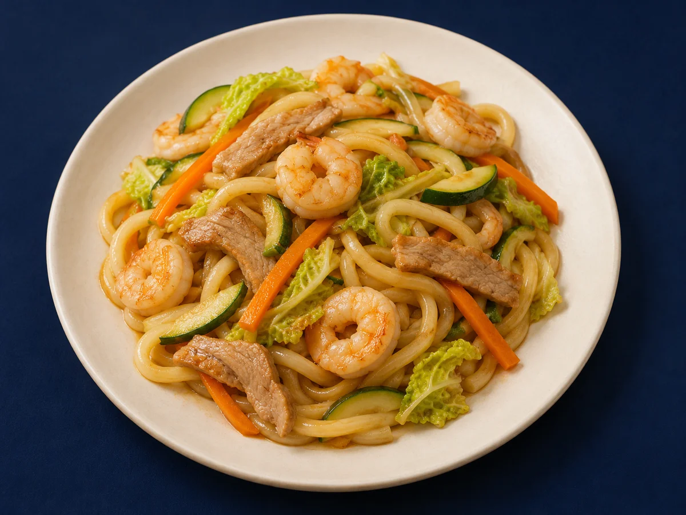
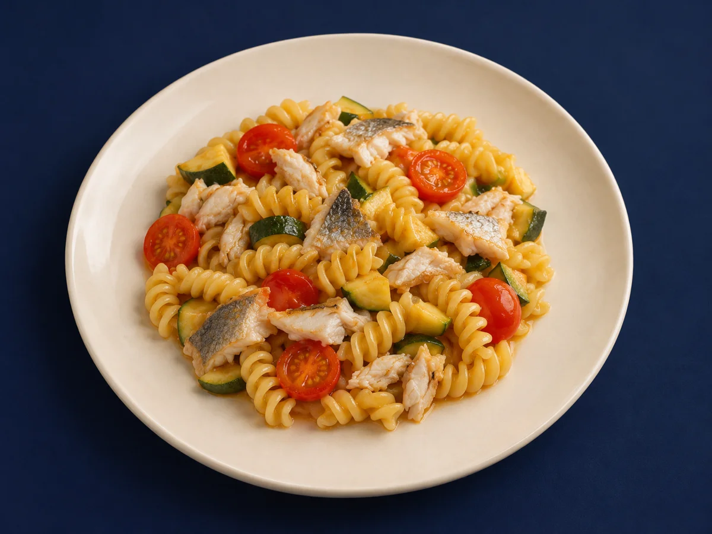
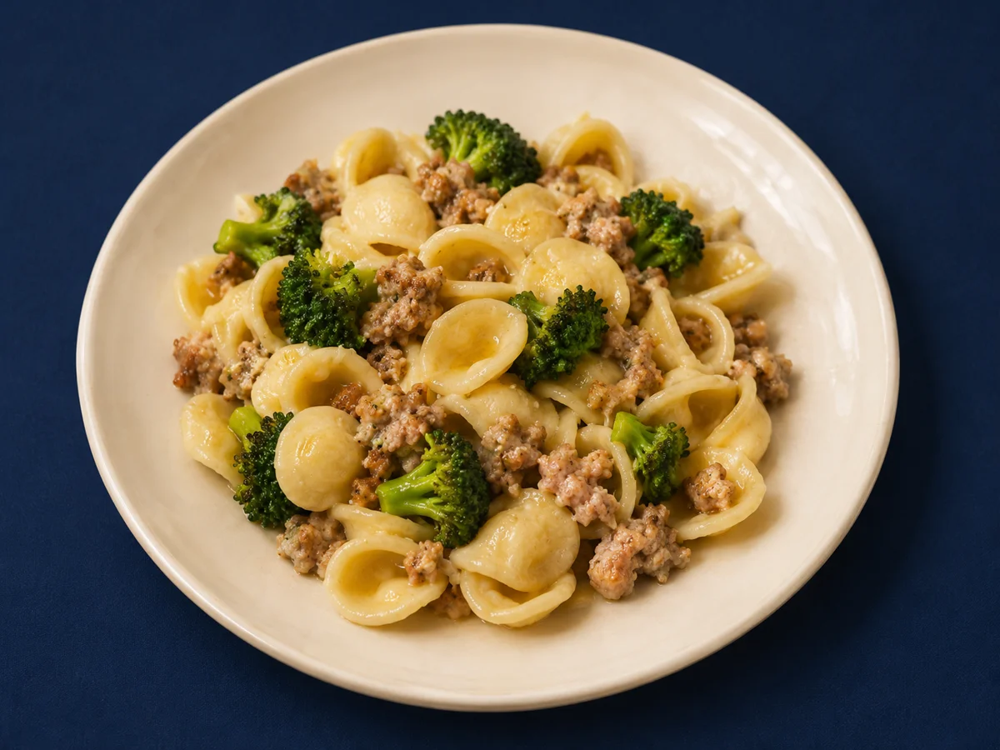
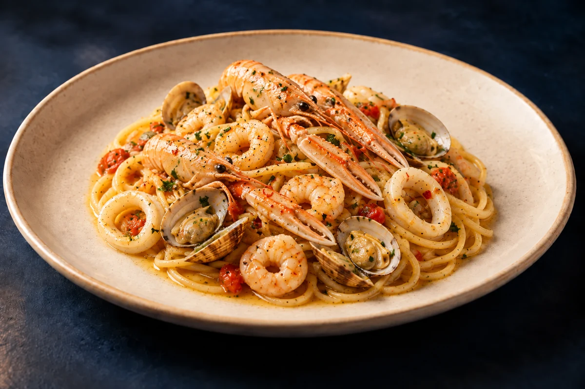
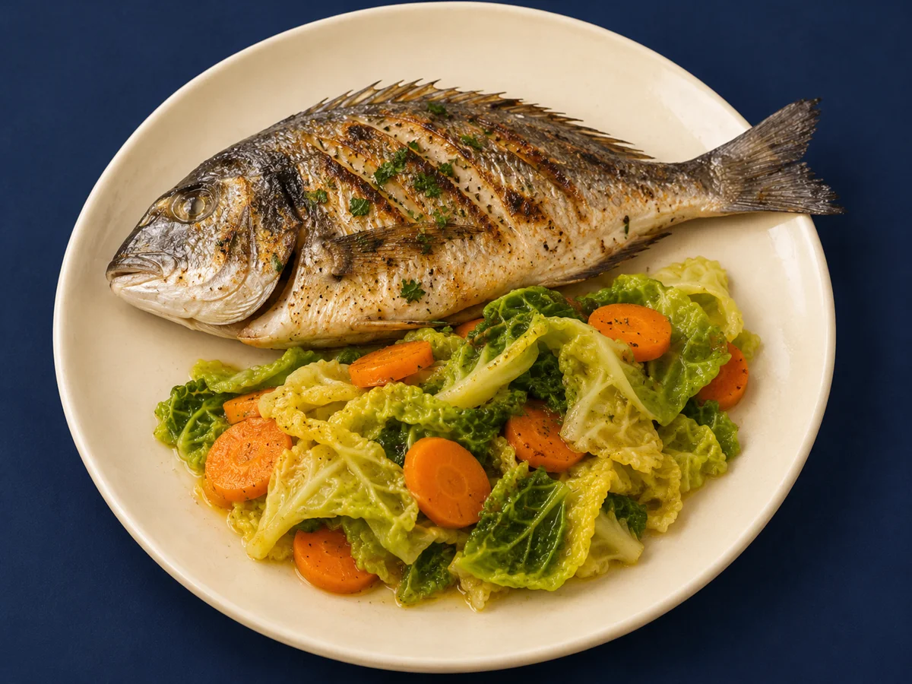
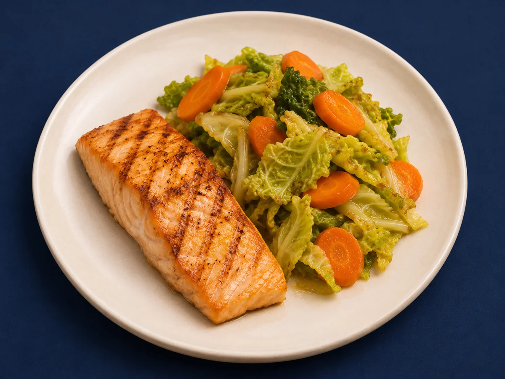
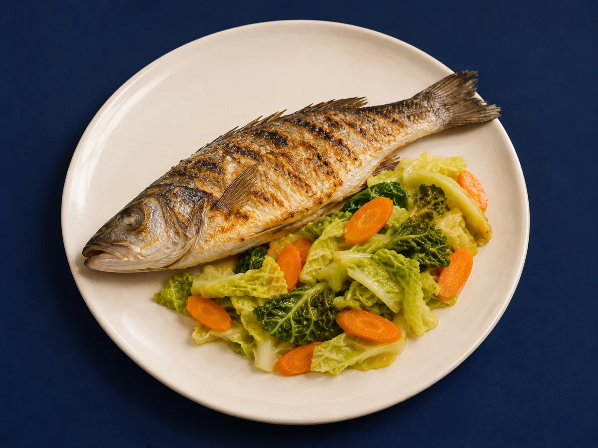
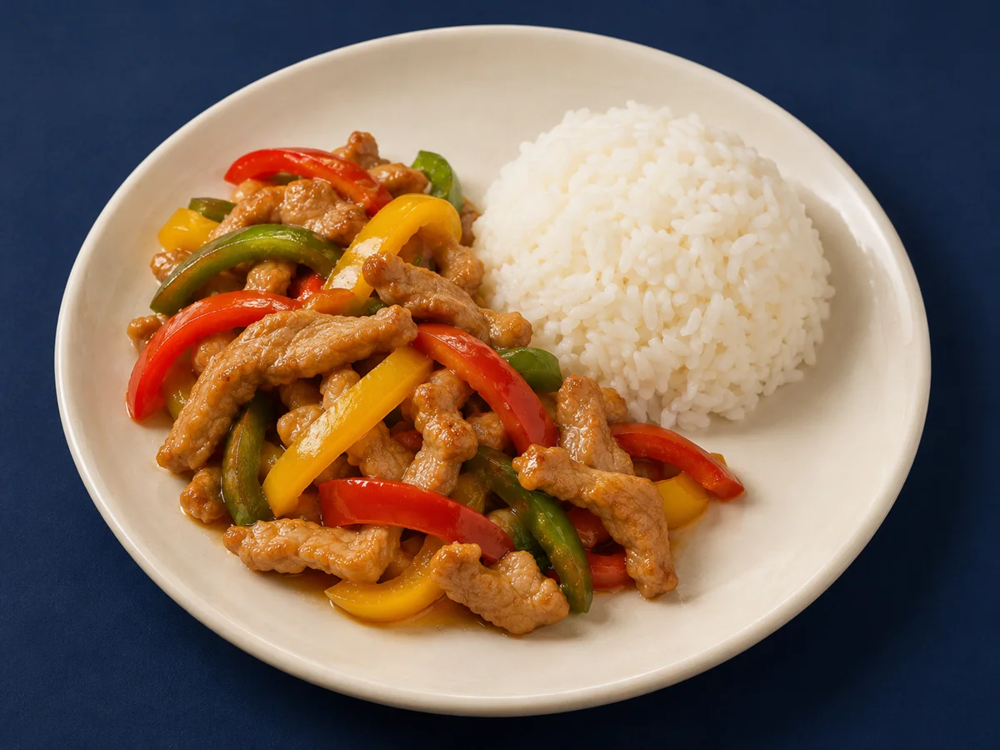
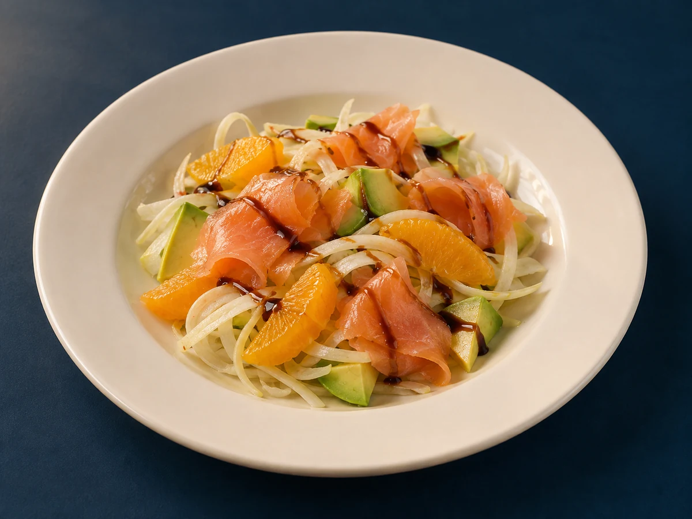

Udon con gamberetti*, lonza di maiale e verdure

Udon saltati con gamberetti*, lonza di maiale, carote, zucchine e verza.
0102
Valido solo a pranzo,
nel giorno sotto indicato

Udon saltati con gamberetti*, lonza di maiale, carote, zucchine e verza.
0102

Fusilli con zucchine, bocconcini di orata e pomodorini.
0104

Orecchiette con broccoli e salsiccia, dal gusto rustico e avvolgente.
01

Spaghetti con gamberetti*, gamberoni*, vongole e cozze, con un tocco di pomodoro.
010214

Orata alla griglia, accompagnata da verza e carote saltate.
04

Salmone alla griglia, accompagnato da verza e carote saltate.
04

Branzino alla griglia, accompagnato da verza e carote saltate.
04

Straccetti di maiale saltati con peperoni, accompagnati da riso bianco.

Finocchi, arancia, salmone fresco e avocado, con aceto balsamico.
04
Le immagini dei piatti, pur realistiche, sono generate con intelligenza artificiale e hanno scopo illustrativo.
Attendere la conferma del Ristorante per considerare valido l’ordine.
Persone indicate nelle richieste via WhatsApp: 0
Dato indicativo: richieste avviate, non prenotazioni confermate. Azzeramento ogni giorno alle 15:00.